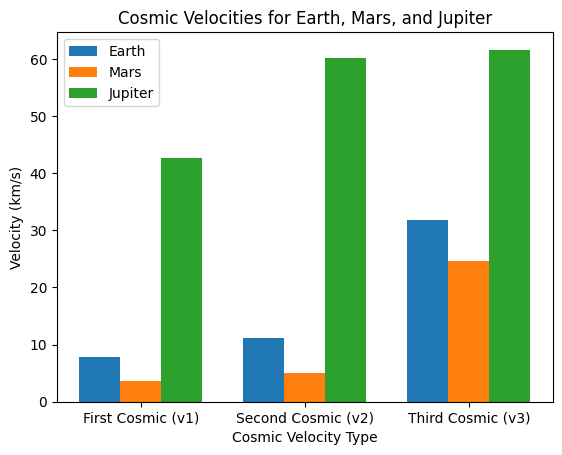

Problem 2
Task 1. Cosmic Velocities: Definitions and Meanings
1. First Cosmic Velocity (Orbital Velocity)
The first cosmic velocity is the minimum velocity required for an object to stay in a stable circular orbit around a celestial body. It is given by:
- \(G\): Gravitational constant (\(6.674 \times 10^{-11} \, \text{m}^3 \text{kg}^{-1} \text{s}^{-2}\))
- \(M\): Mass of the celestial body
- \(R\): Radius from the center of the celestial body
üîπ Example: A satellite in low Earth orbit (~300 km altitude) moves at ~7.9 km/s.
2. Second Cosmic Velocity (Escape Velocity)
The second cosmic velocity is the minimum velocity needed to break free from a planet's gravity without further propulsion. It is derived from energy conservation:
üîπ Example: Earth‚Äôs escape velocity is ~11.2 km/s.
- If \(v < v_2\): The object falls back.
- If \(v = v_2\): The object reaches infinity but with zero velocity.
- If \(v > v_2\): The object moves into hyperbolic orbit.
3. Third Cosmic Velocity (Solar System Escape Velocity)
The third cosmic velocity is the minimum speed needed to escape the Sun’s gravitational field from Earth’s orbit. It is given by:
where: - \(v_2\) is Earth’s escape velocity (11.2 km/s). - \(v_{\text{orb}}\) is Earth's orbital speed (29.8 km/s).
üîπ Example: The third cosmic velocity from Earth is ~42.1 km/s, used by interstellar missions like Voyager 1 & 2.
4. Summary of Cosmic Velocities
| Cosmic Velocity | Meaning | Formula | Example (Earth) |
|---|---|---|---|
| First (\(v_1\)) | Orbiting velocity | \(\sqrt{G M / R}\) | 7.9 km/s |
| Second (\(v_2\)) | Escape velocity | \(\sqrt{2 G M / R}\) | 11.2 km/s |
| Third (\(v_3\)) | Solar escape velocity | \(\sqrt{v_2^2 + v_{\text{orb}}^2}\) | 42.1 km/s |
Task 2. Mathematical Analysis of Cosmic Velocities
1. First Cosmic Velocity (\(v_1\)) – Orbital Velocity
The first cosmic velocity is derived from the centripetal force equation:
which must balance the gravitational force:
Setting \(F_c = F_g\):
Canceling \(m\) and solving for \(v_1\):
Parameters Affecting \(v_1\)
- Mass (\(M\)) of the celestial body: Higher mass increases velocity.
- Radius (\(R\)) of orbit: Higher altitude lowers velocity.
üîπ Example: A satellite in low Earth orbit (~300 km) moves at 7.9 km/s.
2. Second Cosmic Velocity (\(v_2\)) – Escape Velocity
Derived from energy conservation:
- Kinetic Energy at launch:
$$ KE = \frac{1}{2} m v_2^2 $$ - Gravitational Potential Energy:
$$ PE = -\frac{G M m}{R} $$
For escape, total energy must be zero:
Solving for \(v_2\):
Parameters Affecting \(v_2\)
- Mass (\(M\)): Higher mass increases escape velocity.
- Radius (\(R\)): A larger radius decreases escape velocity.
üîπ Example: Earth‚Äôs escape velocity = 11.2 km/s.
3. Third Cosmic Velocity (\(v_3\)) – Solar System Escape Velocity
To leave the Solar System, an object must escape both Earth's gravity and the Sun's gravity. The total velocity required is:
where: - \(v_2\) = Earth’s escape velocity (11.2 km/s) - \(v_{\text{orb}}\) = Earth’s orbital speed (29.8 km/s)
Parameters Affecting \(v_3\)
- Sun’s gravity: A stronger gravitational pull increases \(v_3\).
- Initial position: The farther from the Sun, the lower the required \(v_3\).
üîπ Example: Voyager 1 achieved ~42.1 km/s to escape the Solar System.
4. Summary of Velocity Dependence
| Velocity | Formula | Mass (\(M\)) | Radius (\(R\)) | Orbital Speed (\(v_{\text{orb}}\)) |
|---|---|---|---|---|
| First (\(v_1\)) | \(\sqrt{G M / R}\) | üîº Increases | üîΩ Decreases | ❌ Not required |
| Second (\(v_2\)) | \(\sqrt{2 G M / R}\) | üîº Increases | üîΩ Decreases | ❌ Not required |
| Third (\(v_3\)) | \(\sqrt{v_2^2 + v_{\text{orb}}^2}\) | üîº Increases | üîΩ Decreases | üîº Increases |
Task 3. Calculation and Visualization of Cosmic Velocities for Different Planets
1. Introduction
The first, second, and third cosmic velocities depend on the mass and radius of celestial bodies. We calculate these velocities for Earth, Mars, and Jupiter and visualize the differences.
2. Formulas for Cosmic Velocities
Using the universal gravitational constant:
-
First Cosmic Velocity (Orbital Velocity): $$ v_1 = \sqrt{\frac{G M}{R}} $$
-
Second Cosmic Velocity (Escape Velocity): $$ v_2 = \sqrt{\frac{2 G M}{R}} $$
-
Third Cosmic Velocity (Solar System Escape): $$ v_3 = \sqrt{v_2^2 + v_{\text{orb}}^2} $$
where: - \(M\) = mass of the celestial body, - \(R\) = radius of the celestial body, - \(v_{\text{orb}}\) = orbital velocity of the planet around the Sun.
3. Python Code for Calculations and Visualization
import numpy as np
import matplotlib.pyplot as plt
# Constants
G = 6.674e-11 # Gravitational constant (m³/kg/s²)
# Data for Earth, Mars, and Jupiter (mass in kg, radius in m, orbital velocity in m/s)
planets = {
"Earth": {"M": 5.972e24, "R": 6.371e6, "v_orb": 2.978e4},
"Mars": {"M": 6.417e23, "R": 3.389e6, "v_orb": 2.41e4},
"Jupiter":{"M": 1.898e27, "R": 6.9911e7, "v_orb": 1.307e4},
}
# Calculate velocities
velocities = {}
for planet, data in planets.items():
M, R, v_orb = data["M"], data["R"], data["v_orb"]
v1 = np.sqrt(G * M / R) # First cosmic velocity
v2 = np.sqrt(2 * G * M / R) # Second cosmic velocity
v3 = np.sqrt(v2**2 + v_orb**2) # Third cosmic velocity
velocities[planet] = [v1, v2, v3]
# Convert to km/s
for planet, v in velocities.items():
velocities[planet] = [round(v_i / 1000, 2) for v_i in v]
# Print results
print("Cosmic Velocities (km/s):")
for planet, v in velocities.items():
print(f"{planet}: v1 = {v[0]} km/s, v2 = {v[1]} km/s, v3 = {v[2]} km/s")
# Visualization
labels = ["First Cosmic (v1)", "Second Cosmic (v2)", "Third Cosmic (v3)"]
x = np.arange(len(labels))
width = 0.25
fig, ax = plt.subplots()
for i, planet in enumerate(planets.keys()):
ax.bar(x + i * width, velocities[planet], width, label=planet)
ax.set_xlabel("Cosmic Velocity Type")
ax.set_ylabel("Velocity (km/s)")
ax.set_title("Cosmic Velocities for Earth, Mars, and Jupiter")
ax.set_xticks(x + width)
ax.set_xticklabels(labels)
ax.legend()
plt.show()
Cosmic Velocities (km/s)
Earth
- First Cosmic Velocity (v₁): 7.91 km/s
- Second Cosmic Velocity (v₂): 11.19 km/s
- Third Cosmic Velocity (v₃): 31.81 km/s
Mars
- First Cosmic Velocity (v₁): 3.55 km/s
- Second Cosmic Velocity (v₂): 5.03 km/s
- Third Cosmic Velocity (v₃): 24.62 km/s
Jupiter
- First Cosmic Velocity (v₁): 42.57 km/s
- Second Cosmic Velocity (v₂): 60.2 km/s
- Third Cosmic Velocity (v₃): 61.6 km/s

Task 4. Importance of Cosmic Velocities in Space Exploration
1. Introduction
Cosmic velocities define the energy required for spacecraft and satellites to move within and beyond planetary orbits. These velocities are critical for launching satellites, interplanetary travel, and even future interstellar missions.
2. Applications in Space Exploration
1st Cosmic Velocity (Orbital Velocity) – Satellites & Space Stations
- The first cosmic velocity (\(v_1\)) allows objects to maintain a stable orbit around a planet.
- Used for launching satellites (e.g., GPS, weather, and communication satellites).
- The International Space Station (ISS) orbits Earth at approximately 7.66 km/s, close to Earth's \(v_1\).
2nd Cosmic Velocity (Escape Velocity) – Interplanetary Missions
- The second cosmic velocity (\(v_2\)) is needed to break free from a planet's gravitational pull.
- Required for missions like:
- Apollo Moon Missions (needed \(v_2 = 11.2\) km/s from Earth).
- Mars Rovers (Perseverance, Curiosity) – Escape from Earth, enter Mars’ orbit.
- Jupiter and Outer Planet Missions (e.g., Juno spacecraft).
3rd Cosmic Velocity (Solar System Escape) – Deep Space & Interstellar Travel
- The third cosmic velocity (\(v_3\)) allows a spacecraft to leave the solar system.
- Examples:
- Voyager 1 & 2 – Left the solar system using gravity assists from Jupiter and Saturn.
- Parker Solar Probe – Fastest human-made object (700,000 km/h).
- Future interstellar missions (e.g., Breakthrough Starshot) require overcoming \(v_3\) for deep-space exploration.
3. Challenges & Future Prospects
- Fuel & Energy Requirements: Current propulsion methods rely on chemical rockets, which have limitations in reaching higher velocities.
- Gravity Assists: Spacecraft use planets like Jupiter for gravitational boosts to achieve \(v_3\).
- Advanced Propulsion:
- Ion Thrusters (used on NASA’s Dawn Mission).
- Nuclear Propulsion (potential for Mars and beyond).
- Light Sail Technologies (e.g., Breakthrough Starshot).